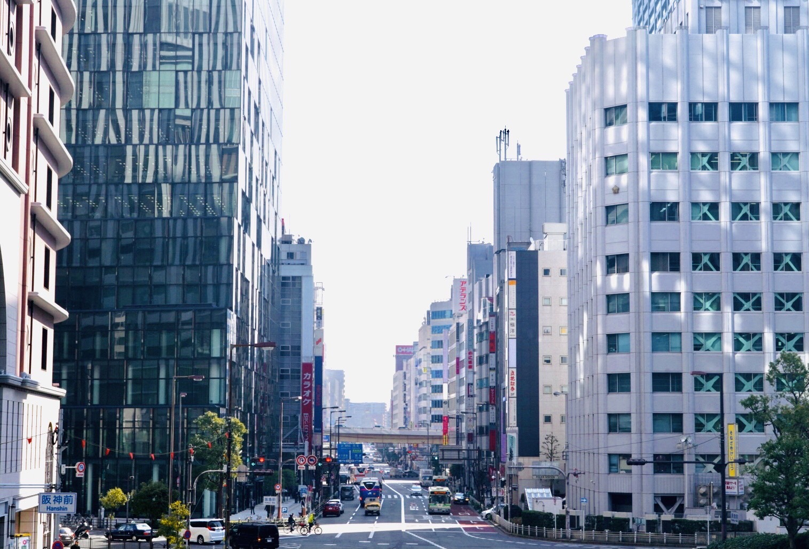

自動販売機マップ
自動販売機マップInformation
自動販売機マップの制作状況
このページでは私が自動販売機マップをどういう動機で、何を考え、どう制作、実現したのかということについて記しました。
使用技術

言語
html
css
javascript
フレームワーク
jquery(ヘッダーで使用)
leaflet(GIS系のフレームワークの中で参考になる日本語の資料が多かったのと動作が軽いことを理由に採用)
デザイン
ibispaint(ロゴなどのデザイン)
gimp(無料で使えるphotoshop みたいなもの、画像の切り抜き等で使用)
なぜ作ろうと思ったか
自動販売機は私達が暮らすあらゆる場所に溢れています。一見ランダムに配置されてるように見える自動販売機の分布にどのような特徴があるのか気になったので作りました。
また、インターネット上には全ての自動販売機会社の自動販売機が網羅された分布図が少なく実現できたら面白いものができるのではないかと思ったからです。
工夫した・心がけた点
レスポンシブ化
現在、webサービスはスマホで利用する人が大半を占めていると思います。そのため、スマホの画面サイズを軸にレスポンシブ化することを心がけました。
スマホやタブレットなど小さい画面サイズの方では大まか上手くいったと思いますが、PCだと全画面にした場合、拡大比率によってはフォントなどのサイズと画像のサイズのバランスが崩れてしまうことがあり、まだまだ課題が残っている分野だと感じました。
画面によって挙動や見え方などが変わってくるため、どのページでも同じように見えるようにすることが想像以上に難しかったです。
わかりやすく快適に
シンプルで無駄のないデザインを軸にどんな人でも使い方が理解できるように、わかりやすい言葉を使ったり、画像を使うことで説明をできるだけ簡潔にして使い方が簡単に理解できるように心がけました。
cssの記述に関しては、制作する中で何度も調整することが多かったためhtmlのファイルに書かれていたり、cssのファイルに書かれていたりとごちゃごちゃになってしまいましたが、何も記述しないことに比べれば、ブラウザではとても見やすいデザインになったのではないかと思います。
ポップな雰囲気にする
自動販売機は同じ場所で微動だにせず、機械音と照明を静かに奏でながら購入者を忍耐強く待ち続けているように感じさせる機械です。
そのため、なにか厳格で硬派なイメージを持ってしまうかもしれません。
最近は見た目が華やかな自動販売機が登場していますが、まだまだそのようなイメージは払拭できていないように感じます。
そのような状況下で私はあえてイメージとは真逆のポップなデザインにしてみることにしました。
パステルカラーを多用したり、一部手書きのデザインを取り入れたりし、動きの部分では自動販売機の画像をタップをすると画像が飛び出して見えるような演出を加えるといったことをすることによって、技術的にはまだまだ乏しいものの、全体的少しワクワクするような雰囲気を与えることができたのではと思います。
個人で制作したものなので利用する人はほぼいないと思いますが、楽しく買い物できるきっかけになるようなコンテンツを作ることを心がけることができたのではないかと感じました。